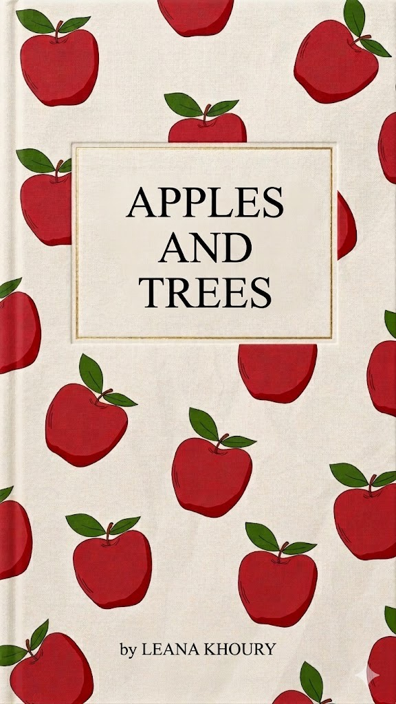

A personal essay cycle
Read in “pages” (slides). Use ←/→ keys or the buttons.
I
At thirteen, I wished my father were dead. What you might call a father complex, I call an attachment to the most unhinged, extravagant concepts of life. Through overcoming and yearning, I began my own metamorphosis: from an insouciant child to a wild girl who doesn’t get the blues. Now I’m sixteen, and I know where I stand.
My father always insisted I was destined to become either an engineer or an architect. He saw a potential in me that I felt obligated to fulfill, a path he had carved long before I began to find my own. By age nine, I had already constructed a two-story Barbie Dreamhouse, complete with colorful walls and tiny cupcakes decorating the kitchen table. I still remember the deep satisfaction of that first creation. It soon led to more ambitious projects: wooden beds for my dolls, complex LEGO sets, and racetracks for my cousins’ cars. Whenever I managed to fix a broken gadget, the adults would remark that I was a "gifted" child.
Eventually, my research led me to a field that merged my technical skills with my fascination for the cosmos: aerospace engineering. It felt like a natural evolution, combining my foundation in construction with my growing interest in the stars.
My mom’s fascination with astronomy was a gift she passed down to my sister and me. I remember that one school event when I was six where they rented massive telescopes capable of revealing the most minute, intricate details of objects thousands of light-years away. Though I was young, I had already memorized the night sky and spent the evening pointing out the planets to the amazed onlookers. They watched in astonishment, wondering how a child could distinguish between the tiny, shimmering dots above. Since then, I have carried on my mother’s legacy, devouring everything I can read about the universe in the hope of one day working in the field of space exploration.
My dedication and ambition felt like a wind, a southwestern one, often the strongest in specific seasons, such as during the onset of the summer monsoon in Asia. That wind only fanned my belief that I could achieve great things just by making time for myself. After all, I am human, and a human is capable of what their ancestors once accomplished. So I began my journey; I set myself a plan for over a year — a list of to-dos — obsessing over how much it would impress everyone else. My plan included coding programs, drone building, mathematical perfection…
It isn’t narcissistic to think highly of yourself, or to wonder if you might be grandiose. So the wind kept me hungry for more, and I kept eating. But the hunger only grew bigger, and now I can’t help but purge. The craving never stops. The unbearable, overwhelming pressure I put on myself is eating me alive, and I can’t stop it.
Excellence. Perfection. Two words so simple… yet they cost me my breath, over and over again. Two words so powerful they always find a way into my head, whispering: You can do better than this. And I believed them. It’s not that I can’t, perhaps it’s a matter of limits. But my obsession thrashes into me like oblivion, drowning any spark of innocence or necessary naivety.
Perhaps it is self-love to use your full potential. Or perhaps it is self-hatred — the urges that make you transgress borders. The things I would do for validation, and the time spent proving how worthy I can be. So whenever I feel like I’m doing less than I should, I punch or throw whatever is around me. The anger I have toward myself is so profound that I get scared of hurting the people I love.
In reality, no one keeps track of what you achieve or don’t, it’s an illusion buried deep in your thoughts. It's a voice in your head crying for you to stop looking like an ugly, fat, loser, pushing and nagging, hungrier than ever.
Unfortunately, no one makes it out alive. And here I am, as lively as I seem, a sheet of paper whose shallow fibers cannot hold the weight of the ink that bled through. I cursed myself for my fragility, for not being unyieldingly strong, for holding onto a rock that slowly ripped me apart.
I aligned my pieces like planets, hoping for balance in a chaotic system; a balance between straight A’s, creative work, and an athletic weapon. So, beyond studying, I sacrificed some of my time to develop my artistic skills, learning new techniques in drawing and painting. Of course, I thrived doing so.
My athletic life began when I was four years old, when my mom signed me up for both ballet and karate classes. That was five hours a week spent strengthening my body. I remember my first ballet teacher vividly: she had a smudge on her face shaped like a freckle, a big nose, and an annoyingly high-pitched voice. Nothing ever seemed to please her. I would perform the most beautiful choreography, and she would still comment on how big I looked next to the other dancers.
Karate was more competitive. My first fighting competition earned me a gold medal, and as usual, my ego decided I was unbeatable. I even fought for my nation in Amsterdam, where I placed second. And God, the amount of weight I had to cut for the world cup. Seven years of karate, I had collected forty-two certificates, two trophies, and twenty-eight medals, with four disappointing losses. When I finally got my black belt in December, I quit both arts.
Then, in April the year after, I found myself thriving in boxing class, ranked number one at my gym. Everyone was afraid to face me, and that satisfaction felt incredible — knowing I was untouchable, unstoppable. Unfortunately, my physical strength wasn’t a source of protection for my innocence.
The boxing community welcomed me warmly; I made many of my current friends there. I even grew close to my coach, Adam, who helped me deal with my thoughts like a brother by blood.
Adam was twenty-three years old at the time, and his father passed away from cancer when he was still a kid. On New Year’s Eve, he was celebrating upstairs with my neighbors. I don’t know why, but the whole night Adam kept on texting me about the most random things. Apparently, he had left a bullet from his gun for me to find in my backyard the next morning. I guess it was meant to be a gift or something to remember him by.
I knew he’d had too much to drink that night, but I was surprised when he kept texting me the next morning. I thought to myself how kind he was, he talked to me like he really cared for me. Since the first of January, we've called ourselves “friends with the weird age gap.” We talked every single day about everything in our lives. I truly trusted him completely with my family issues, with my self-image, with my goals and dreams, but I especially knew that I could always count on him no matter what.
It was fun to argue with him since we always had opposite opinions on every political or social topic. He had this mindset where he “doesn’t do dating”. I always argued that he's just lonely and has never loved anyone enough. “The greatest misfortune is not to be unloved, but not to love” as I quote Albert Camus. With him, every topic was well organized and he stood by his words, and so did I. I knew what I was talking about. That’s why he also enjoyed talking to me even if it meant staying up until 4 in the morning, because apparently my head was beyond my years.
But when Adam was too busy to message me, my mood turned sour. He had become my source of happiness. I got so hung up on him that he was all I could think about.
At first, our connection felt warm, like someone finally saw right through me. But what I mistook for understanding was only disguise, and I played my innocent act too well.
Adam groomed me. He never did anything physical, but he mastered the art of words; talking inappropriately, flirting, treating me like a golden trophy. I got too attached, so I became avoidant.
After Adam, everything felt measured, especially with relationships. Becoming an avoidant felt like peace for a long while, even though people think I’m growing myself apart from them. In fact, nothing ever passes by me, nothing makes me overthink. My condensed emotion somehow felt free… He turned out to be another life lesson.
II
I still made mistakes and I should have taken that lesson more deeply. I fell in love with Alec—or at least with what I thought love was. When Alec broke my heart for the first time, the world came crashing down.
I met Alec in kindergarten, an innocent childhood friend I lost contact with for over seven years. By chance, we met again at thirteen and became close friends. We would call every day, sometimes even meet up at Burger King. Slowly, I grew obsessed with him and disguised it as love. I did drive him crazy, while he implicitly manipulated me. Our toxic relationship was never really a relationship, but a one-sided rivalry between the world and me to get the trophy. As we both played the victim in our own story, we eventually went our separate ways.
Later on, I met Joseph at a party, one summer ago. We danced together and exchanged numbers. Our first date felt like utopia for me. We watched the sunset as I laid my head on his shoulder. I even got to ride behind him on his Vespa—it felt like a real life rom-com whenever he broke in the middle of the road just so I’d hug him tighter. He smelled good, and I was giving him neck kisses. We split a donut, and he covered my nose with its cream while we laughed like two idiots. At the end of the night he held my hand as we started running in the middle of the crowd, and the yellow street lights wrapped us in a warm, quiet haze that felt like a memory I’d never had.
The thing about Joseph is that he was deep. He always had an interesting existential theory, and he always listened to mine. Once, he said he viewed a soulmate as something physical yet unseen, existing in a fourth-dimensional world. He even drew me a demonstration of what he thinks the soul looks like. I didn’t really understand what he meant back then, but I was astonished by the way he thought. I shared my view of the multiverse with him. I explained that the universe is a world where the same laws of physics apply, while a multiverse is a cluster of worlds governed by different laws. It isn’t a division of every dilemma ever encountered. And if a parallel universe exists, there wouldn’t be another me or another you, just the same me mirrored through a wormhole, wearing the same clothes and acting the same way but upside down. He enjoyed hearing about my perspective on life.
He even taught me how to play a song on his guitar. I wrote him a French poem inspired by the night we met, wrapped in a pink envelope, stained with lipstick kisses and sprayed with my strawberry-vanilla scented perfume.
Songer pour une danse
L’étincelle de nos yeux se rejoint au milieu,
Dans la foule, je t’observe, songe curieux.
Pour une dernière danse, fragile comme les vieux,
Un songe lucide, précaire et réel :
J’espère qu’entre tes bras je me réveille.
Tes yeux, une étincelle au cœur de la nuit,
Dans la flamme errante, dans la foule tu me suis.
Une valse sous les feux qui s’élèvent au ciel,
Et au-dessus de nous, une lumière éternelle.
I wasted my first kiss for him. When it was time to go, he dropped me home, holding me the entire ride back… and then I never saw him again. What I romanticized for two weeks was never a mutual feeling, and now I have to remember him longer than I ever knew him. I regret not knowing his intentions when I felt him hug me tighter than usual.
I felt deeply humiliated. I never let myself show weakness yet Joseph made me look softer than ever. I hit rock bottom for a coward of a guy that was unsure about his feelings. I was poetry and he was a dyslexic asshole who could never read me.
That obsession grew something inside me. Ever since then, I’ve been careful, as if stepping on broken glass whenever I meet a new guy. I stopped trusting people.
III
I have always felt emotions in depth even though I knew how to hide them. Jealousy was my biggest enemy and I'm not one to be afraid of admitting its complexity.
A friend of mine, Valerie, would sometimes come to me, breaking down about how nothing was working out for her. She fell in love with an older guy and her parents were forbidding her to see him any more. She slowly lost appetite and eventually stopped eating. I was there for her to give her advice and help her heal, since I know how she felt.
She’d look up to me in admiration and tell me that I was her source of strength, that I inspired her to do better. That compliment always kept me going.
Valerie got better. I envy Valerie. Although I always believed that, in some ways, I’d still be better than her at everything she did. I’m a natural, after all. But my mind would come up with alarming competitions, followed by frustration and anxiety, refusing to accept someone else’s success. I never really showed it. Publicly, I was a good friend, I had to be. But deep down, I knew that being one step ahead of everyone was my only way of feeling good about myself. I can’t stand watching someone surpass me — it crushes me to my knees, questioning every piece of myself that isn’t enough. And I could spot the green-eyed monster staring at me from miles away, marking its territory, hungry to hunt.
And I do feel guilty.
Guilty for taking my own ascent for granted.
Guilty for how easily others seem to rise.
Guilty for every unkind thought that flickers across my mind.
Guilty for being praised for something I’m not sure I deserve.
IV
My perfectionism was only mental, until it wasn’t.
I grew up believing my body was wrong or too big. That discomfort started early, back in preschool, when adults compared my body to other children’s, as if it were something to measure. Food became my comfort, the one thing that calmed me. I gained weight. A lot, at least according to others. Looking back at old photos now, I realize I wasn’t even as big as they made me feel.
One day, I woke up without an appetite. I didn’t eat at all, and it felt good, powerful, even. The next day, I ate one small meal and fasted again. Then I repeated it. And again. For six months, I barely ate. I lost fifteen kilos and learned that satisfaction was not part of the equation.
My body answered before my mind did: dizziness, constant pain and hair slipping through my fingers. My metabolism felt broken, and no matter what I looked like, I still felt fat. I used to eat two hundred calories and cry over it. I even searched whether drinking water could make me gain weight. That’s how deep it went.
Later, I started eating again but only if I burned everything off. I exercised obsessively, and on days I couldn’t, I punished myself by purging. Control had replaced nourishment.
V
As a child, I always felt smaller than the house I lived in. Everyone seemed to understand what was happening except me—or so I pretended. The truth is, I did understand. I was not blind, nor foolish; I was simply avoiding the weight of knowing. Whenever the subject surfaced, my heart refused to carry the reality.
My mom would sometimes pull my sister and me aside, her voice sharp with accusation, and speak of my father as if he were capable of the unimaginable. Because her claims sounded too monstrous to be true, I defended him fiercely, silencing her warnings as though they were a betrayal of the divine. I failed to see him for what he truly was: the Mephistopheles of our own home, a deceptive figure who used intellect and gifts to buy my loyalty while he harbored a growing darkness. He shaped my understanding of love through calculated trades, offering me puzzles to solve and books to escape into, while doling out affection only in measured, transactional doses. I mistook his provision for protection and his control for safety, never realizing that the man I worshipped would eventually prioritize gambling, infidelity, and violence over his own family. I did not notice that as I was growing, the "great" father I clung to was actually a shadow, shifting into the very monster my mother had warned us about
For most of my childhood, I was Daddy’s girl. He was a doctor, the kind everyone admired: disciplined, hardworking, generous to a fault. He carried his family as if sacrifice were a moral obligation. He sent money endlessly to his sister, whose life existed in perpetual collapse. She survived through prostitution, theft, and desperation, stealing from strangers, and especially from us. In our neighborhood, we were considered wealthy, and wealth invites entitlement. Her daughters bore the consequences of her chaos; one fled to marry young, the other lived trapped in bipolar disorder, a storm that dismantled everything around her. Every visit to their home ended the same way: broken glass, screaming adults, and me, silent, crying in a corner, absorbing damage that wasn’t mine.
When my uncle fled the country, my father took on even more weight. He had grown up in Ukraine when the USSR started dissolving, and had survived things no child should. He told those stories like jokes, laughing as if pain could be softened by humor. But behind every story was blood, fear, and loss. Trauma didn’t disappear. It traveled.
For a while, he still knew how to make us happy. Until one summer, he didn’t.
I was nine when my mom, my sister, and I went to Cyprus for a summer camp. On the first day, I saw my mother crying into her phone in public. I felt embarrassed and afraid. I didn’t want anyone to know what was happening to us, especially not my friend Sasha. As I walked closer, I heard one name repeated again and again: Cynthia. My father’s assistant. That was how I learned about the affair.
After that, everything became tense. My father grew angry, unpredictable. The car became a place of screaming. Small mistakes turned into explosions. Once, he threw rocks at my mom because she forgot her keys. He broke my nanny’s back. He threw ice cubes at my sister when he lost control. Violence became normal.
Alcohol made it worse. He came home drunk, yelling, blaming God, blaming life, blaming us. He never blamed himself.
One evening, while I was studying chemistry for a test the next day in the living room, he came in and started hitting my mom. Something inside me snapped. I stood up and hit him back. I knew he wouldn’t hurt me. I was still his favorite. I pushed him away, locked him in his room, and trembled for hours after. The next day, I stayed home from school.
However, as the years passed, his discipline dissolved into the reckless lure of poker and casino roulette. He had become a man who lived in luxury while neglecting to feed his children.
That’s when the sadness arrived. Not loudly. Slowly. Like fog. I wanted to disappear. I wanted everything to stop. I blamed myself for all of it, turned the anger inward, convinced I was the reason things were broken.
It took time, but I finally understood something simple and important:
This was not my fault.
I was never the problem.
This was life passing through me.
I always felt bad for my mom. She truly deserves the world. But divorce was never an option for her. She lived in survival mode, doing everything she could to give my sister and me what we needed, and more than that, the best education possible. She worked relentlessly, day and night, while my father lay back, watching television as if the weight of the household had never belonged to him.
Years have passed, and we still live inside this reversed life. My father has since ended his relationship with Cynthia and now claims to be focused on his family. Sometimes I try to show him love — everyone deserves it, I tell myself. Other times, I feel nothing but disgust, knowing how easily he could disappoint me again. That instability taught me something early: dependence is dangerous.
My parents are mainly the reason I grew up afraid of relying on others. I give endlessly and expect nothing in return. From the outside, it looks like a virtue. But values can be taught through conversation, not carved into you through trauma.
VI
At thirteen, I got an adult arrested.
It was the 23rd of July. My cousins had just landed from the U.S., and I hadn’t seen them in over a year. We spent the day at the beach, catching waves and searching for seashells. As we paddled on our boards, I yelled “follow the sun,” and we raced like winning was the only thing that mattered. The sunset was bright, the water clear, though the sea was filled with jellyfish that could sting us at any second. Being with them was always an adventure and some of the best moments of my life.
Out of curiosity, I went to ask how much it cost to rent a jet ski. I wanted to try something new. The guy renting them was in his twenties, bronzed, with an uneven beard. He told me it was thirty dollars for fifteen minutes. I thought it was unreasonable and walked away, forgetting about it.
About half an hour later, the same guy came up to us, asking who the girl was that had asked about the jet ski. I told him it was me. He invited me to get on. I said no and that I wasn’t carrying enough money with me. He insisted, saying he’d let me ride for free. I refused again, but he kept pushing until I gave in. I told myself nothing could go wrong. My cousins knew where I was. We were in a public place.
At first, I sat behind him while he drove. Halfway through, he said it would be better if we switched places, so I sat in front. The jellyfish were everywhere, far from shore, and I was afraid to touch the water. He started going farther than I was comfortable with. I tried taking the handle to turn us back. That’s when he held me by the stomach, his hands lingering. I told myself it was an accident. Then I felt something else. I ignored it. Then it happened again. And again.
When we got back, he insisted my cousin ride with him too. Since I had come back “safe,” she thought nothing of it. When she returned, she told me she felt the same thing. We laughed it off, promising we would never tell our parents.
When we got out of the water, her dad asked who that guy was. That’s when she broke down crying. For a moment, neither of us fully understood what had happened — until it hit me. Nothing ever comes for free.
The adults called the man over. A fight broke out in the middle of the beach. When my father arrived, he was furious. I remember shouting, screaming, people yelling “NO MEANS NO.” I stayed under a towel, trying to disappear, trying not to process what was happening.
My cousin spat on him. I hit him three times on the head. I felt victorious, and ashamed for feeling that way. The police came. He was arrested, jailed for three days, fired, and forced to leave town. Ironically, the man’s name turned out to be Alec as well.
The best day turned into the worst within minutes.
That moment stayed carved inside me. For a long time after, I had panic attacks whenever someone touched me. Showering felt pointless. Affection felt forced, foreign.
Healing took time. Thirteen year old Alec helped me through it back then, which is why losing him hurt more than I expected.
After that, physical touch was never something I craved. Still, I believed that one day I’d meet someone different because not everyone is like this.
I was just unlucky.
I waited, trying not to rush into anything while I took good care of myself. When God knew that I was ready, he sent me Christian.
Christian is a guy that saw me around town and decided to send me a message to try and get to know me. He seemed funny in the way he talked. In my head, I thought he was innocent because he didn’t flirt with me right away like they always do. He got to know me first, then invited me on a date. He picked me up, got me my favorite food, and even brought me a bouquet of red roses. At the time, I was still unsure about him. I had trust issues from all the men who had hurt me before.
For two weeks, I tried my best not to self-sabotage, not to cut him off. I am not evil. He was everything I had ever wanted. He wrote me handwritten letters and cared for me so deeply, yet I was terrified—terrified of being heartbroken again.
There was a time I cried for hours in my room, trying to decide whether I should end things with him or not. A gut-wrenching, soul-tied melancholy spiraled inside me as I closed myself off, afraid. An unexplainable desire for passion, paired with the urge to run away from affection.
“I don’t want to hurt him, but I’m tired of squinting my eyes and pretending I love him back,” I told myself.
But that same day, I saw him again. As I admired his presence and got lost in his irises, I couldn’t help but notice how his pupils widened. I knew it had to mean something. We looked it up together, and I was right—pupils dilate when you’re in love. At that moment, I knew. I’m not sure what exactly, but I’m ready to find out. I’m ready to stay patient, because there is nothing more accurate than a woman’s intuition. what I didn't know then, I will eventually. And I need him to guide me there. That path might face obstacles; like stepping into oblivion, into something unknown, something we’ve never experienced. It may bring fear and strength, loss and victory, tears of joy and sadness. But with him, that path is filled with love.
And I’m ready to go all in.
As I touch the dark matter of the unknown, I hope he will be the answer I’m searching for.
I love Christian. I’m happy he showed me how gentle love is supposed to be. I thank him for looking into my eyes—into me—and listening as I speak nonsense aloud. I thank him for kissing me while I made my unfunny jokes. I thank him for listening to my voice singing in the car that watched us fall for each other, and I thank him for holding my hands when they’re cold.
And when he gets tired on our way to finding the answer, I’ll be here, to give him enough fuel to keep going. Because we’re not here to give up so easily.
His eyes are brown, warm like a walnut on a christmas fire, they keep you sleepy, full and safe. His curls linger between my fingers like water on a summer evening, keeping you going for the rest of the hiking day. His hands hold mine like a present dad holds his daughters’ to cross the road, protecting, reassuring, and you feel a guardian angel watching over you smiling like you succeeded in your life plan.
Now, at sixteen, I am glad the cycle ends with me. I have decided to work in international relations. Although engineering doesn’t mean as much as it did to me back then, I am forever aiming to change the world. Soon I will be traveling abroad to continue my studies in France.
I accept change now. I know that healing isn’t loud, but it is real. Sometimes you need someone to help you find peace. Other times, you need to remember that pausing doesn’t mean losing time. You can leave what no longer serves you. If I broke free from generational trauma, so can you. It ends with you.
The apple may fall far from the tree if the tree is hanging off a cliff.
End
Thanks for reading.